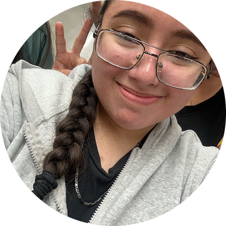
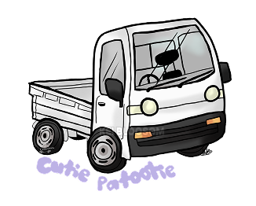
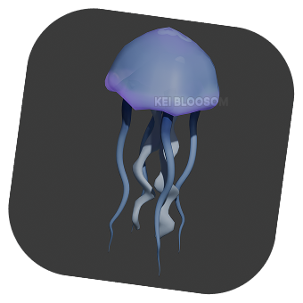
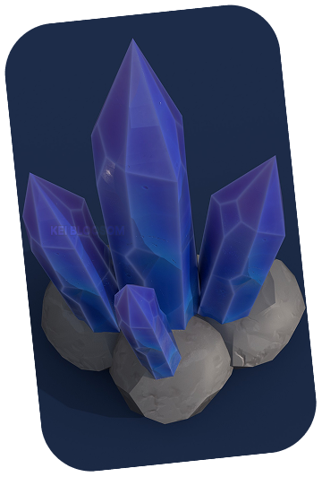

Meet the Artist
Hello! Welcome to my page. Seems like you are curious in learning more about the artist, which is me. Nice to meet you I’m Melani. I am the artist of Kei Blossom and also the designer of this web page.
Kei Blossom is one of my favorite projects I have created. I wanted to share this project, which the reason of creating this web page. To the reason it was born because of inspiration of a truck from a person I know. It’s very unusual from common cars you see driving around. The kei truck is very small compare to the pickup truck. By just looking at it made be able to create, Kei Blossom!
I hope you are here to admire the project as much as I do. Even though, I am not a art student...I have a passion for art. I love creating things and making my art alive like Kei Blossom. I hope to not have art block and to continue creating art!

Other Works


